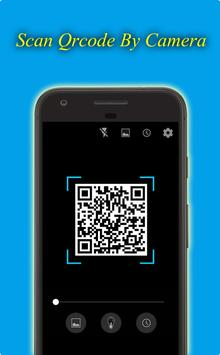
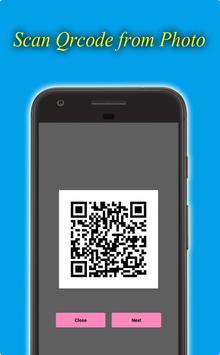
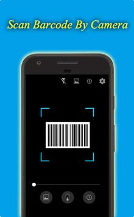
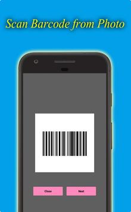

SmartScan QR Scanner & QR Code Scanner Smart Scan
QR code scanner and bar code scanner are free for Android's best and fastest QR code / bar code creators and scanner applications. Using the phone's camera, the program automatically scans and recognizes information about QR codes or barcodes. All major bar code and QR code formats are supported.
|  |  |  |  |